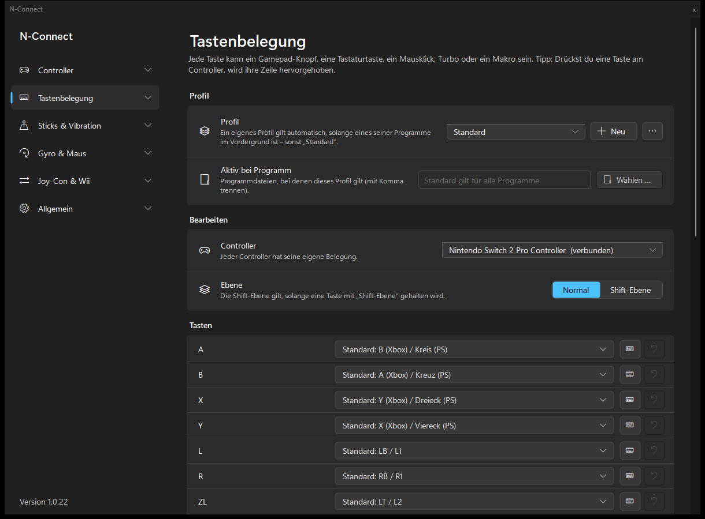
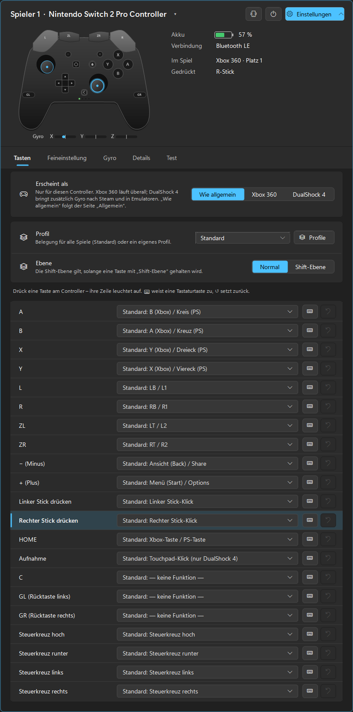
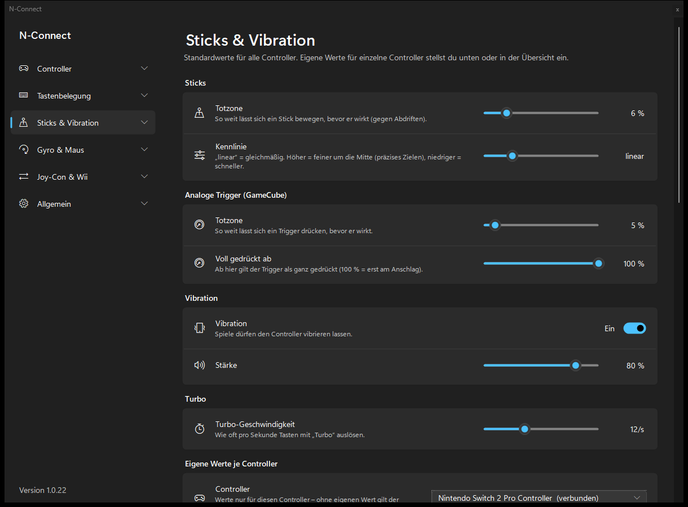

1
2
3



Switch 2 Pro ControllerJoy-Con 2
GameCube (Switch 2)Switch Pro Controller
Joy-ConNES · SNES · N64 · Mega Drive (NSO)
Wii Remote · Nunchuk · ClassicWii U Pro Controller
DualShock 4DualSense · DualSense Edge
Xbox 360 · One · Series · Elite